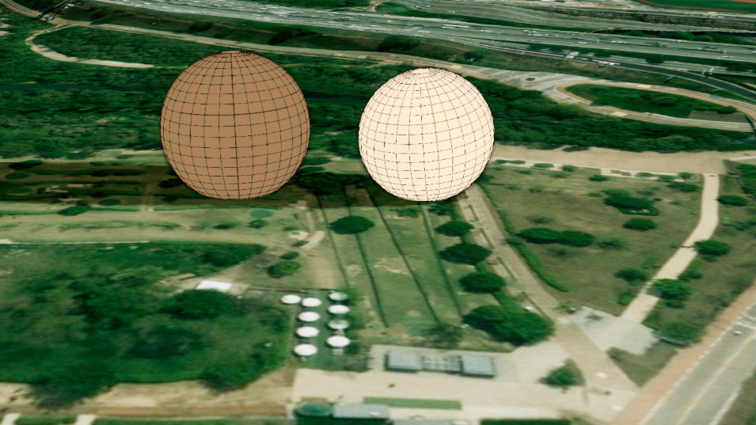

구체 (Sphere)
목차

U3dSphere는 지정한 좌표에 공 모양의 도형을 만듭니다.
반지름과 세그먼트로 크기와 매끄러움을 정하고, 각도 옵션으로 반구나 잘린 구도 만들 수 있습니다.
1. 구체 생성하기
U3dSphere 생성자로 객체를 만들고, U3dVectorLayer.addGeometry로 레이어에 등록한 뒤 위치를 지정하면 화면에 표시됩니다.
레이어를 만들고 도형을 등록·제거하는 방법은 3D Geometry 시작하기 - 도형 등록하고 제거하기에서 설명합니다.
반지름(radius) 단위는 미터입니다.
API
U3dSphere(opt) : 구체 객체를 생성하는 생성자
매개변수
opt(object) : 구체 생성 옵션opt.name(string) : 객체 이름. 지정하지 않으면 자동으로 생성됩니다opt.radius(number) : 반지름(m). 기본값:5opt.widthSegments(number) : 가로 방향 분할 수(최소 3). 기본값:8opt.heightSegments(number) : 세로 방향 분할 수(최소 2). 기본값:6opt.phiStart(number) : 가로 방향 시작 각도(라디안). 기본값:0opt.phiLength(number) : 가로 방향 스윕 각도(라디안). 기본값:Math.PI * 2opt.thetaStart(number) : 세로 방향 시작 각도(라디안). 기본값:0opt.thetaLength(number) : 세로 방향 스윕 각도(라디안). 기본값:Math.PIopt.color(ColorRepresentation) : 색상. 기본값:'#ff0000'opt.opacity(number) : 투명도(0~1). 기본값:1opt.outline(boolean) : 외곽선 표시 여부. 기본값:falseopt.lineColor(ColorRepresentation) : 외곽선 색상. 기본값:'#000000'opt.wireframe(boolean) : 와이어프레임 표시 여부. 기본값:falseopt.setDistanceMaterial(boolean) : 거리에 따라 밝기와 안개가 변하는 재질 사용 여부. 기본값:falseopt.coordinates(Array<GeoPositionVector3>) : 위치 좌표 배열 (위경도, EPSG:4326)opt.properties(KeyValue) : 사용자 정의 속성정보
1. 구체 생성 예제
반지름 6m의 구를 만들어 지면 위에 올리는 예제입니다.
세그먼트를 기본값보다 올려 매끄러운 구로 만들었습니다.
const app = new GeOnDT.U3dAPP({containername: 'map'});
const vectorLayer = new GeOnDT.vector.U3dVectorLayer({name: 'vector'});
const sphere = new GeOnDT.geom.U3dSphere({
name: 'sphere_01',
radius: 6, // 반지름 6m
widthSegments: 24, // 가로로 촘촘하게
heightSegments: 16, // 세로로 촘촘하게
color: '#9b59b6'
});
vectorLayer.addGeometry(sphere); // 벡터 레이어에 등록
sphere.setPosition(126.9393, 37.5194, 16 + sphere.radius); // 지형 고도 16m 지점의 지면 위
2. 위치 지정하기
구체는 좌표 하나를 기준으로 그 지점에 놓입니다.
위치는 setPosition에 위경도를 넣어 지정합니다.
지정한 위경도는 레이어가 그릴 때 월드 좌표로 변환되어 반영됩니다.
변환된 월드 좌표는 getVertex로 확인할 수 있습니다.
API
U3dSphere.setPosition(x, y, z) : 위경도 좌표로 위치를 지정하는 함수
매개변수
x(number | Vector3) : 경도.Vector3를 넘기면 좌표 객체 하나로 지정합니다y(number) : 위도z(number) : 높이(m)
API
U3dSphere.getPositions() : 지정된 위경도 좌표 배열을 반환하는 함수
반환값
return(Array<GeoPositionVector3>) : 위경도 좌표 배열 (EPSG:4326)
API
U3dSphere.getVertex() : 변환된 월드 좌표 배열을 반환하는 함수
반환값
return(Array<WorldPositionVector3>) : 좌표 배열 (월드 좌표, EPSG:3857)
API
U3dSphere.setRotation(rotation) : 도형의 회전값을 지정하는 함수
매개변수
rotation(Euler) : 회전값 (라디안)
1. 위경도로 배치하는 예제
세 번째 인자는 고도(m)이며 구체의 중심이 기준입니다.
지형 높이를 자동으로 조회하거나 따라가지 않으므로, 구를 지면 위에 올려놓으려면 그 지점의 지형 고도에 반지름을 더합니다.
지형 고도는 app.getHeightAtGeographicPoint({x, y})로 조회하며, 지형 로딩이 끝난 뒤에 호출해야 실제 값을 얻습니다.
vectorLayer.addGeometry(sphere);
// 지형 고도가 16m인 지점의 지면 위에 올립니다.
sphere.setPosition(126.9393, 37.5194, 16 + sphere.radius);
console.log(sphere.getPositions()); // [Vector3 {x: 126.9393, y: 37.5194, z: 22}]
3. 크기와 세그먼트 조절하기
생성 후에 크기를 바꾸려면 setParam에 바꿀 값만 담아 전달합니다.
전달한 값만 반영되고 나머지는 기존 값이 유지되며, 값을 바꾸면 지오메트리가 즉시 다시 만들어집니다.
세그먼트는 구를 몇 조각으로 나눠 그릴지 정하는 값입니다.
API
U3dSphere.setParam(param) : 여러 속성을 한 번에 갱신하는 함수
매개변수
param(object) : 변경할 속성 객체param.radius(number) : 반지름(m)param.widthSegments(number) : 가로 방향 분할 수param.heightSegments(number) : 세로 방향 분할 수param.phiStart(number) : 가로 방향 시작 각도(라디안)param.phiLength(number) : 가로 방향 스윕 각도(라디안)param.thetaStart(number) : 세로 방향 시작 각도(라디안)param.thetaLength(number) : 세로 방향 스윕 각도(라디안)param.color(ColorRepresentation) : 색상param.opacity(number) : 투명도(0~1)param.outline(boolean) : 외곽선 표시 여부param.lineColor(ColorRepresentation) : 외곽선 색상param.wireframe(boolean) : 와이어프레임 표시 여부param.shadow(boolean) : 그림자 사용 여부
API
U3dSphere.getParam() : 현재 속성을 반환하는 함수
반환값
return(object) : 반지름·세그먼트·각도·외곽선 등 현재 속성 객체
1. 크기 변경 예제
영향 반경을 넓힐 때처럼 크기만 바꾸는 경우입니다.setParam은 전달한 값만 반영하므로 색상과 세그먼트는 그대로 유지됩니다.
sphere.setParam({radius: 12}); // 반지름 12m로 변경
2. 매끄럽게 다듬는 예제
기본값(8, 6)은 각진 형태라 가까이 확대해 보는 구에는 부족합니다.
반대로 값을 낮추면 다면체처럼 보여 도형임을 강조할 때 쓸 수 있습니다.
sphere.setParam({
widthSegments: 32,
heightSegments: 24
});
3. 현재 속성 확인 예제
속성으로 직접 읽거나 getParam으로 한 번에 가져옵니다.getParam이 돌려준 객체는 다른 구의 setParam에 그대로 넘겨 같은 모양으로 맞출 수 있습니다.
console.log(sphere.radius); // 12
const param = sphere.getParam();
console.log(param.radius, param.widthSegments, param.heightSegments);
4. 반구·부분 구 만들기
각도 옵션 네 개로 구의 일부만 그릴 수 있습니다.
값은 모두 라디안입니다.
phiStart/phiLength: 가로 방향으로 얼마나 돌릴지. 한 바퀴가Math.PI * 2thetaStart/thetaLength: 세로 방향으로 얼마나 훑을지. 극에서 극까지가Math.PI
phiLength를 Math.PI로 주면 세로로 반 잘린 구가, thetaLength를 Math.PI / 2로 주면 극 쪽 절반만 남은 구가 됩니다.
세로 방향(theta)의 기준 축은 남북(y축) 입니다.
그래서 thetaLength: Math.PI / 2는 위쪽 돔이 아니라 북쪽 절반이 됩니다.
위를 향한 돔을 만들려면 setRotation으로 x축을 90도 돌립니다.
1. 세로로 반 자른 구 예제
phiLength를 반 바퀴로 줄여 단면이 보이는 구를 만듭니다.
내부 구조를 보여주거나 절반만 필요한 표현에 사용합니다.
const half = new GeOnDT.geom.U3dSphere({
radius: 10,
widthSegments: 32,
heightSegments: 16,
phiLength: Math.PI, // 한 바퀴의 절반만
color: '#3498db'
});
vectorLayer.addGeometry(half);
half.setPosition(126.9393, 37.5194, 30);
2. 위를 향한 돔 예제
thetaLength로 극에서 적도까지만 그려 돔을 만듭니다.
세로 방향 기준 축이 남북이므로, 위를 향하게 하려면 x축으로 90도 돌립니다.
const dome = new GeOnDT.geom.U3dSphere({
radius: 20,
widthSegments: 32,
heightSegments: 16,
thetaLength: Math.PI / 2, // 극에서 적도까지만
color: '#2ecc71',
opacity: 0.5
});
vectorLayer.addGeometry(dome);
dome.setPosition(126.9393, 37.5194, 30);
// 극이 위를 향하도록 x축으로 90도 회전합니다.
dome.setRotation(new THREE.Euler(Math.PI / 2, 0, 0));
5. 색상과 투명도 설정하기
색상은 setColor, 투명도는 setOpacity로 바꿉니다.
두 함수 모두 재질에 즉시 반영됩니다.
색상 값은 '#ff0000' 같은 hex 문자열, 'rgb(255,0,0)' 문자열, 0xff0000 숫자, THREE.Color 객체를 모두 받습니다.
setOpacity는 값이 1 미만이면 반투명 처리를 자동으로 켜고 1이면 끕니다.
현재 색상과 투명도는 getParam()으로 읽습니다.
API
U3dSphere.setColor(color) : 색상을 설정하는 함수
매개변수
color(ColorRepresentation) : 색상 값
API
U3dSphere.setOpacity(opacity) : 투명도를 설정하는 함수
매개변수
opacity(number) : 투명도(0~1).0이면 완전 투명,1이면 불투명
1. 색상과 투명도 변경 예제
상태별로 색을 달리하거나, 안쪽 객체가 비쳐 보이도록 투명도를 낮출 때 사용합니다.
색상 값은 hex 문자열과 숫자를 모두 받습니다.
sphere.setColor('#00b3ff'); // hex 문자열
sphere.setColor(0x00b3ff); // 숫자
sphere.setOpacity(0.4); // 반투명
sphere.setOpacity(1); // 불투명
2. 현재 색상과 투명도 확인 예제
U3dSphere.setColor는 값을 Color 객체로 변환해 보관하므로, getParam().color는 항상 Color 객체로 반환됩니다.
const {color, opacity} = sphere.getParam();
console.log(color.getHexString()); // '00b3ff'
console.log(opacity); // 1
3. 와이어프레임 표시 예제
면을 채우지 않고 뼈대만 표시합니다.
sphere.setParam({wireframe: true});
6. 외곽선 표시하기
세그먼트 경계선을 함께 표시하려면 외곽선을 켭니다.
생성 옵션 outline으로 초기 상태를 정하고, 생성 후에는 setParam({outline: true})으로 켜거나 끕니다.
외곽선을 켠 뒤에는 setLineColor로 색상을 바꿀 수 있습니다.
API
U3dSphere.setLineColor(lineColor) : 외곽선 색상을 설정하는 함수
매개변수
lineColor(ColorRepresentation) : 외곽선 색상
API
U3dSphere.getLineColor() : 외곽선 색상을 반환하는 함수
반환값
return(ColorRepresentation) : 외곽선 색상
1. 외곽선 제어 예제
외곽선을 켜면 세그먼트 경계선이 드러나 구의 곡면이 또렷해집니다.
반투명한 구에서 특히 형태를 알아보기 쉬워집니다.
sphere.setParam({outline: true}); // 외곽선 표시
sphere.setLineColor('#ffffff'); // 외곽선 색상 변경
sphere.setParam({outline: false}); // 외곽선 제거
생성할 때 함께 지정할 수도 있습니다.
const sphere = new GeOnDT.geom.U3dSphere({
radius: 8,
outline: true,
lineColor: '#ffffff'
});
7. 속성정보와 해제
도형에는 id, 이름, 업무 데이터 같은 부가 정보를 key-value 형태로 담아 둘 수 있습니다.
새 속성을 넣을 때는 addProperties, 기존 값을 바꿀 때는 changeProperties, 전체를 통째로 교체할 때는 setProperties를 사용합니다.
더 이상 쓰지 않는 구체는 dispose로 정리합니다.
지오메트리·재질·자식 객체를 함께 해제하므로 메모리 누수를 막을 수 있습니다.
API
U3dSphere.getProperties() : 사용자 정의 속성정보를 반환하는 함수
반환값
return(KeyValue) : 사용자 정의 속성정보
API
U3dSphere.setProperties(input) : 사용자 정의 속성정보 전체를 설정하는 함수
매개변수
input(KeyValue | string) : 속성 객체 또는 JSON 문자열
API
U3dSphere.addProperties(key, value) : 속성정보를 하나 추가하는 함수
매개변수
key(string) : 속성 식별키value(*) : 속성 값
API
U3dSphere.changeProperties(key, value) : 기존 속성정보의 값을 변경하는 함수
매개변수
key(string) : 변경할 속성 식별키value(*) : 속성 값
API
U3dSphere.removeProperties(key) : 속성정보를 제거하는 함수
매개변수
key(string) : 제거할 속성 식별키
API
U3dSphere.setShadow(enabled) : 그림자 사용 여부를 설정하는 함수
매개변수
enabled(boolean) : 그림자 사용 여부. 기본값:true
API
U3dSphere.isShadow() : 그림자 사용 여부를 반환하는 함수
반환값
return(boolean) : 그림자 사용 여부
API
U3dSphere.dispose() : 구체와 관련 리소스를 해제하는 함수
1. 속성정보 다루기 예제
sphere.addProperties('관측소', '남산 제1관측소');
sphere.addProperties('관리번호', 'S-0412');
sphere.changeProperties('관측소', '남산 제2관측소'); // 기존 값 변경
sphere.removeProperties('관리번호'); // 속성 제거
console.log(sphere.getProperties()); // {관측소: '남산 제2관측소'}
속성 전체를 한 번에 교체할 수도 있습니다.
sphere.setProperties({
관측소: '남산 제1관측소',
관리번호: 'S-0412',
설치일: '2026-03-01'
});
2. 해제 예제
레이어에서 먼저 제거한 뒤 해제합니다.
vectorLayer.removeGeometry(sphere);
sphere.dispose();